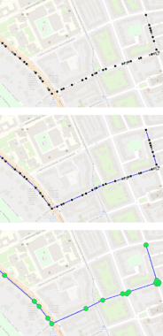

The Project
Location tracking devices, such as GPS, are nowadays widely used in smart phones, and in vehicles. As a result, geospatial trajectory data are currently being collected and used in many application domains. MobilityDB provides the necessary database support for storing and querying such geospatial trajectory data.
MobilityDB is implemented as an extension to PostgreSQL and PostGIS. It implements persistent database types, and query operations for managing geospatial trajectories and their time-varying properties.
A geospatial trajectory is generally collected as a sequence of discrete location points and timestamps, as illustrated in the top most figure. In reality, however, the movement is continuous. Therefore MobilityDB interpolates the movement track between the input observations, as illustrated in the figure in the middle. As such, the moving object location and properties can be queries, effectively approximated, at any time instant. While this interpolation restores the movement continuity, it does not correspond to an increased storage size. On the contrary, it allows to discover redundant observations and to remove them. as illustrated in the bottom most figure. So, only the observations where a significant change in speed/direction occur are retained. This process is called normalization, and it typically results in significant reduction in storage size compared to input points.

MobilityDB provides two main geospatial trajectory type: tgeompoint for a temporal geometry point, and tgeogpoint for a temporal geography point. Both can represent a geospatial point that moves over time, where the coordinates are respectively expressed as PostGIS geometry or geography. It also provides a rich set of functions to manage these type; including: input/output, topological relationships, speed, direction, distance, etc. Note that the return values of many of these functions are temporal. For example, the speed of a car is a value that changes over time. Therefore the type system of MobilityDB includes types for temporal floats, temporal Booleans, temporal text, and temporal integers.